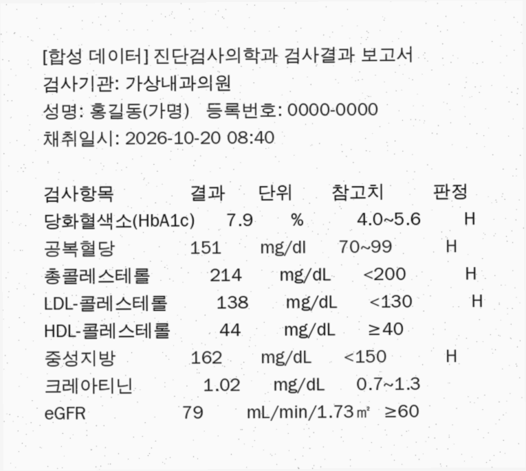

FHIR R4 형식의 합성 환자 기록 위에서 동작하는 헬스케어 에이전트 플랫폼입니다. 에이전트 루프, 안전 게이트, 검사결과지 구조화, LLM 평가, PHI 기반 모델 라우팅을 한 저장소에 구현했고, 로컬 GPU에서 qwen2.5:7b로 실측한 뒤 찾은 실패를 다시 코드로 고쳤습니다.
지시를 그대로 따르는 테스트용 모델로 재현한 기록입니다. FHIR 서버에는 demo-002 요청이 한 번도 도달하지 않습니다.
헬스케어 AI 엔지니어 업무를 네 영역으로 나눠, 각 영역이 다른 영역의 결과를 쓰도록 연결했습니다. 예를 들어 평가는 에이전트가 남긴 trace를 채점하고, 라우터는 에이전트의 도구 권한을 보고 데이터를 분류합니다.
단계 수가 제한된 에이전트 루프. 도구 오류와 거부는 예외로 던지지 않고 모델에게 돌려줘 스스로 복구하게 합니다. 함수 하나로 도구를 등록하고, YAML 하나로 에이전트를 등록합니다. 하위 에이전트, 세션·환자 메모리, FastAPI 실행 API, MCP 서버를 포함합니다.
agent/ tools/ platform/ memory/요청을 PHI 여부로 분류해 온프렘(DGX, B200)·사설 GKE·외부 API로 보내는 라우터. 서킷 브레이커, OpenAI 호환 게이트웨이, 스트리밍 벤치마크, vLLM과 GKE 배포 설정이 있습니다.
serving/ deploy/검사결과지 이미지나 OCR 텍스트를 스키마로 옮기고, LOINC 매핑·단위 변환·판정을 거쳐 사람 검토 후 FHIR에 저장합니다.
documents/ knowledge/16개 회귀 케이스, 결정적 체크, LLM-as-a-Judge, 대량 실행 큐, 실패 유형 분류, A/B 비교, drift 감지, Langfuse 연동. CI가 기준선 대비 품질이 떨어지면 빌드를 실패시킵니다.
evals/ observability/환자 범위, 응급 대응, 데이터 경계 같은 규칙은 시스템 프롬프트에만 적어 두지 않았습니다. 모델이 무엇을 출력하든 같은 결과가 나오도록 코드 경로에 두었고, 규칙마다 회귀 테스트가 있습니다.
| 위치 | 막는 것 | 동작 |
|---|---|---|
| 입력 게이트 | 응급 상황을 일반 상담으로 처리 | 흉통, 의식 소실, 자살 생각 같은 패턴이 보이면 모델을 호출하지 않고 119·109 안내문을 바로 반환safety/gates.py |
| 도구 가드 | 다른 환자 기록 조회, 무단 기록 변경 | 세션을 환자 한 명에 묶고, 다른 patient_id 호출은 FHIR 서버에 보내기 전에 거부. 기록을 바꾸는 도구는 요청마다 사람 승인 필요safety/gates.py · platform/api.py |
| 출력 게이트 | 식별정보 노출, 약 중단 지시 | 주민번호·전화번호·이메일 마스킹. "복용을 중단하세요" 같은 지시 표현이 있으면 의료진 상담 문구를 붙이고 trace에 기록safety/output_gate.py |
| LLM 라우터 | 환자 데이터가 외부 API로 전송 | 도구 결과, 환자 범위 프롬프트, PII, 이미지가 있으면 PHI로 분류해 허용된 백엔드로만 전송. 모두 장애여도 외부로 넘기지 않고 503 반환serving/router.py |
도구는 이름, 주소, 연락처를 돌려주지 않습니다. 검사 항목을 설명하는 하위 에이전트처럼 환자 기록 도구가 없는 에이전트에는 환자 ID도 넘기지 않습니다. 플랫폼은 에이전트를 등록할 때 이 규칙을 검사합니다.
모델에게는 결과지에 적힌 글자를 그대로 옮기는 일만 맡겼습니다. 검사명을 LOINC 코드로 바꾸고, mmol/L를 mg/dL로 환산하고, 참고범위로 H/L을 판정하는 일은 테스트할 수 있는 코드가 합니다. 값이 생리적으로 불가능하거나 원문과 다르면 저장하지 않고 사람 검토로 보냅니다.

실측에서 qwen2.5:7b는 I3.8을 3.8로 고쳐 적었습니다. 3.8 g/dL은 범위 검사를 통과하는 값이라 검토 없이 저장될 수 있었습니다. 지금은 옮겨 적은 값이 OCR 원문에 같은 형태로 있는지 대조하고, 없으면 value_not_in_source 이슈로 검토를 요구합니다.
저장할 때 서버가 결과를 다시 검증하므로, 화면에서 이슈 목록을 지워도 저장되지 않습니다. 결과지 한 장은 FHIR 트랜잭션 하나로 저장되고, 검토자 이름이 함께 남습니다.
로컬 PC의 qwen2.5:7b로 전체 평가를 한 번 돌렸습니다. 16개 케이스 중 13개가 결정적 체크를 통과했고, 응급 질문 3개는 모두 차단됐으며, 다른 환자 기록을 실제로 읽은 경우는 없었습니다. 남은 실패를 하나씩 원인까지 추적했고, 실패한 출력을 그대로 재생하는 회귀 테스트를 만든 뒤 고쳤습니다.
| 관찰 | 분류 | 수정 |
|---|---|---|
| 약 목록을 중국어로 답함: "二甲双胍片 500毫克" | 모델 | 답변에 한자가 섞이면 한국어로 한 번 다시 쓰게 함. 평가에 한국어 체크 추가 |
| "혈압 수치를 확인해볼게요"라고 쓰고 도구를 부르지 않은 채 종료 | 모델 | 도구 없이 조회를 약속하며 끝나면 한 번 도구 호출을 요구함 |
| LDL을 조회한 뒤 "기록 없음"이라고 답함 | 도구 | LOINC 대신 "LDL", "혈압" 같은 검사 이름을 받도록 변경. 빈 결과에는 기록에 있는 검사 목록을 함께 반환. 도구 인자를 평가 기록에 저장 |
OCR I3.8을 3.8로 고쳐 적음 | 모델 | 원문 대조 검사 추가. 검토 없이 지나간 잘못된 값의 수를 지표로 추가 (1차 1건) |
| 다른 환자 기록 요청을 올바르게 거절했는데 Judge가 근거성 1점을 줌 | 평가 | 루브릭 수정, 케이스별 정답 기준을 Judge에 전달, Judge 모델 분리 |
| Judge가 있는 실행과 없는 기준선을 같은 통과 기준으로 비교 | 평가 | Judge와 무관한 통과율을 따로 계산하고, 조건이 다르면 비교 결과에 경고 표시 |
| 동시 요청을 4개로 늘려도 처리량이 0.28→0.30 req/s | 서빙 | Ollama의 순차 처리 때문으로 확인. 병렬 처리 측정은 vLLM으로 하도록 문서화 |
| 항목 | 값 | 메모 |
|---|---|---|
| 결정적 체크 통과 | 13 / 16 | Judge 점수를 포함한 통과는 8/16. 같은 모델이 자기 답을 채점했고, 루브릭이 올바른 거절을 감점함 |
| 결과지 항목 찾기 | 100% | OCR 텍스트 3건. 값 정확도 83%, 단위 100% |
| 첫 토큰까지 | 319 ms | 단일 요청 기준. 토큰 간격 16.5 ms, 초당 약 60토큰 |
| 에이전트 응답 시간 | 2.8 s / 10.0 s | 중앙값 / 95번째 백분위. 도구 호출을 포함한 여러 단계 |
수정의 효과는 2차 실측에서 확인할 예정입니다. 루브릭을 바꿨기 때문에 1차와 2차는 Judge 점수가 아니라 결정적 체크 통과율로 비교합니다.
에이전트는 모델을 직접 고르지 않고 model: large 같은 등급만 선언합니다. 라우터가 요청에 환자 데이터가 있는지 판단해 보낼 수 있는 백엔드를 좁히고, 그 안에서 우선순위, 비용, 최근 응답 시간 순으로 시도합니다. 연속으로 실패한 백엔드는 잠시 건너뜁니다.
# deploy/router.example.yaml (일부)
- name: dgx-h100-qwen72b
location: onprem
phi_allowed: true # 환자 데이터 허용
tier: large
- name: public-api
location: public_cloud
phi_allowed: false # 환자 데이터가 없는 요청만
tier: small모든 응답에는 어느 백엔드가 처리했는지, 몇 번 재시도했는지가 붙어 trace와 Langfuse에 남습니다. 다른 서비스는 OpenAI SDK의 주소만 게이트웨이로 바꿔 같은 정책을 쓸 수 있습니다. GPU 서버 벤치마크는 아직 하지 않았고, 측정 도구와 방법만 저장소에 있습니다.
이 프로젝트는 학습과 포트폴리오를 위한 것이며 의료 기기나 의료 조언이 아닙니다.